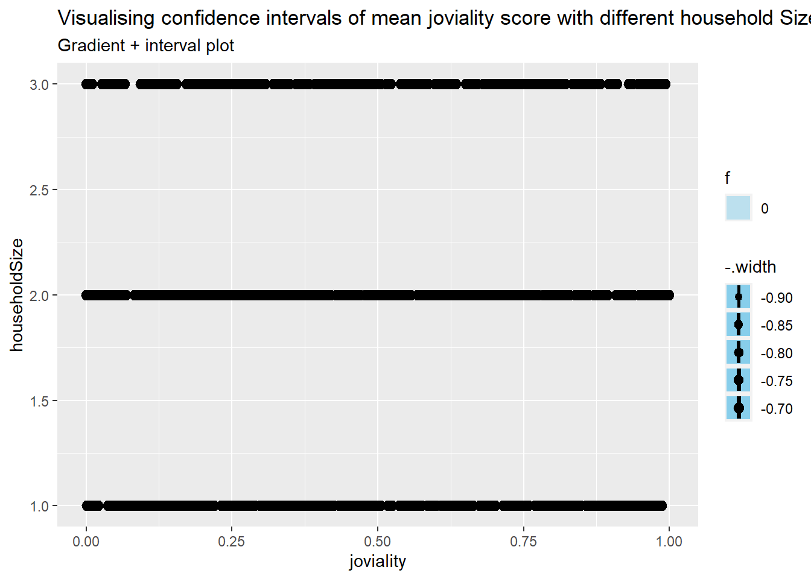
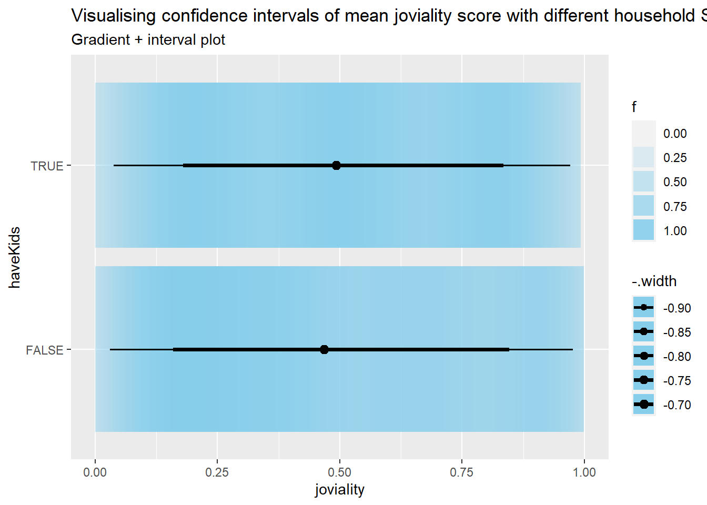
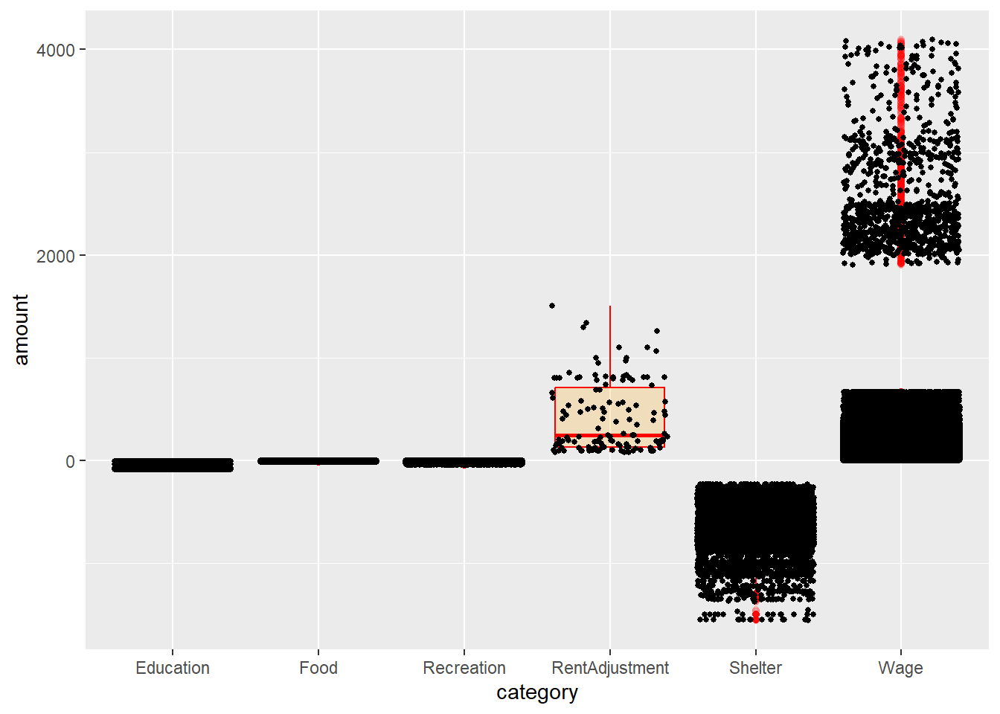

Show the code
#| warning: false
#| echo: false
pacman::p_load(tidyverse,dplyr, ggplot2, plotly,gganimate,ggstatsplot, ggdist, patchwork ) City of Engagement, with a total population of 50,000, is a small city located at Country of Nowhere. The city serves as a service centre of an agriculture region surrounding the city. The main agriculture of the region is fruit farms and vineyards. The local council of the city is in the process of preparing the Local Plan 2023. A sample survey of 1000 representative residents had been conducted to collect data related to their household demographic and spending patterns, among other things. The city aims to use the data to assist with their major community revitalization efforts, including how to allocate a very large city renewal grant they have recently received.
Here we will use static and interactive data analytics to help to reveal any data patterns found.
We have 2 data sources: Participants.csv and FinancialJournal.csv and below are what we know about them:
Participants.csv Contains information about the residents of City of Engagement that have agreed to participate in this study.
participantId (integer): unique ID assigned to each participant.
householdSize (integer): the number of people in the participant’s household
haveKids (boolean): whether there are children living in the participant’s household.
age (integer): participant’s age in years at the start of the study.
educationLevel (string factor): the participant’s education level, one of: {“Low”, “HighSchoolOrCollege”, “Bachelors”, “Graduate”} (use tidyverse to convert to factor with fix sequence)
interestGroup (char): a char representing the participant’s stated primary interest group, one of {“A”, “B”, “C”, “D”, “E”, “F”, “G”, “H”, “I”, “J”}. Note: specific topics of interest have been redacted to avoid bias.
joviality (float): a value ranging from [0,1] indicating the participant’s overall happiness level at the start of the study. 0 is very unhappy and 1 is very happy.
FinancialJournal.csv Contains information about financial transactions.
participantId (integer): unique ID corresponding to the participant affected
timestamp (datetime): the time when the check-in was logged.
category (string factor): a string describing the expense category, one of {“Education”, “Food”, “Recreation”, “RentAdjustment”, “Shelter”, “Wage”}
amount (double): the amount of the transaction
With the initial loaded data, some format is different from what is described in meta data. e.g. householdSize, joviality,amount are
Convert categorical data with fixed sequence as factor, such as education level, financial journal category etc.
#| code-fold: true
#| code-summary: "Show code"
# convert for all Participants columns:
# convert participantId to integer
Participants$participantId <- as.integer(Participants$participantId)
# convert householdSize to integer
Participants$householdSize <- as.integer(Participants$householdSize)
# convert haveKids to boolean
Participants$haveKids <- as.logical(Participants$haveKids)
# convert age to integer
Participants$age <- as.integer(Participants$age)
# convert educationLevel to factor with fixed sequence, define by levels
Participants$educationLevel <- factor(Participants$educationLevel, levels = c("Low", "HighSchoolOrCollege", "Bachelors", "Graduate"))
# convert interestGroup to character
Participants$interestGroup <- as.character(Participants$interestGroup)
# convert joviality to numeric
Participants$joviality <- as.numeric(Participants$joviality) #| code-fold: true
#| code-summary: "Show code"
# convert participantId to integer
FinancialJournal$participantId <- as.integer(FinancialJournal$participantId)
# Convert timestamp column to POSIXct format
FinancialJournal$timestamp <- as.POSIXct(FinancialJournal$timestamp)
# convert category to factor with fixed sequence
FinancialJournal$category <- factor(FinancialJournal$category, levels = c("Education", "Food", "Recreation", "RentAdjustment", "Shelter", "Wage"))
# convert amount to numeric
FinancialJournal$amount <- as.numeric(FinancialJournal$amount)
# Format timestamp to only keep date information
FinancialJournal$date <- as.Date(FinancialJournal$timestamp)Check for missing values in Participants.csv, from the output value we know there’s no missing data.
#| warning: false
any(is.na(Participants))[1] FALSE #do a summary of Participants:
summary(Participants) participantId householdSize haveKids age
Min. : 0.0 Min. :1.000 Mode :logical Min. :18.00
1st Qu.: 252.5 1st Qu.:1.000 FALSE:710 1st Qu.:29.00
Median : 505.0 Median :2.000 TRUE :301 Median :39.00
Mean : 505.0 Mean :1.964 Mean :39.07
3rd Qu.: 757.5 3rd Qu.:3.000 3rd Qu.:50.00
Max. :1010.0 Max. :3.000 Max. :60.00
educationLevel interestGroup joviality
Low : 84 Length:1011 Min. :0.000204
HighSchoolOrCollege:525 Class :character 1st Qu.:0.240074
Bachelors :232 Mode :character Median :0.477539
Graduate :170 Mean :0.493794
3rd Qu.:0.746819
Max. :0.999234 #Remove duplicate rows based on all columns:
Participants %>% distinct()# A tibble: 1,011 × 7
participantId householdSize haveKids age educationLevel interestGroup
<int> <int> <lgl> <int> <fct> <chr>
1 0 3 TRUE 36 HighSchoolOrCollege H
2 1 3 TRUE 25 HighSchoolOrCollege B
3 2 3 TRUE 35 HighSchoolOrCollege A
4 3 3 TRUE 21 HighSchoolOrCollege I
5 4 3 TRUE 43 Bachelors H
6 5 3 TRUE 32 HighSchoolOrCollege D
7 6 3 TRUE 26 HighSchoolOrCollege I
8 7 3 TRUE 27 Bachelors A
9 8 3 TRUE 20 Bachelors G
10 9 3 TRUE 35 Bachelors D
# ℹ 1,001 more rows
# ℹ 1 more variable: joviality <dbl>From the output, we can confirm there’s no missing or duplicate data in Participants dataset. And data distribution is all according to described in meta data.
Do the same checkings for FinancialJournal
#| warning: false
# Check for missing values in FinancialJournal.csv
any(is.na(FinancialJournal))[1] FALSE # Check timestamp range
summary(FinancialJournal) participantId timestamp category
Min. : 0.0 Min. :2022-03-01 00:00:00.00 Education : 3319
1st Qu.: 222.0 1st Qu.:2022-05-24 13:25:00.00 Food :790051
Median : 464.0 Median :2022-08-25 15:00:00.00 Recreation :296013
Mean : 480.9 Mean :2022-08-26 05:00:48.42 RentAdjustment: 131
3rd Qu.: 726.0 3rd Qu.:2022-11-27 07:25:00.00 Shelter : 11463
Max. :1010.0 Max. :2023-02-28 23:55:00.00 Wage :412659
amount date
Min. :-1562.726 Min. :2022-03-01
1st Qu.: -5.594 1st Qu.:2022-05-24
Median : -4.000 Median :2022-08-25
Mean : 20.047 Mean :2022-08-25
3rd Qu.: 21.598 3rd Qu.:2022-11-27
Max. : 4096.526 Max. :2023-02-28 There’s no missing data in FinancialJournal dataset. But there seems some duplicate records in FinancialJournal. Proceed to remove duplicates using distinct() function:
#display duplicate count for each row
#FinancialJournal %>%
#add_count(participantId,timestamp, category, amount) %>%
#filter(n>1) %>%
#distinct()
FinancialJournal %>% distinct()# A tibble: 1,512,523 × 5
participantId timestamp category amount date
<int> <dttm> <fct> <dbl> <date>
1 0 2022-03-01 00:00:00 Wage 2473. 2022-03-01
2 0 2022-03-01 00:00:00 Shelter -555. 2022-03-01
3 0 2022-03-01 00:00:00 Education -38.0 2022-03-01
4 1 2022-03-01 00:00:00 Wage 2047. 2022-03-01
5 1 2022-03-01 00:00:00 Shelter -555. 2022-03-01
6 1 2022-03-01 00:00:00 Education -38.0 2022-03-01
7 2 2022-03-01 00:00:00 Wage 2437. 2022-03-01
8 2 2022-03-01 00:00:00 Shelter -557. 2022-03-01
9 2 2022-03-01 00:00:00 Education -12.8 2022-03-01
10 3 2022-03-01 00:00:00 Wage 2367. 2022-03-01
# ℹ 1,512,513 more rowsPlotting of diagrams in this exercise is mainly based on Grammar of Graphics, using the following layering concept:

Data: The dataset being plotted.
Aesthetics take attributes of the data and use them to influence visual characteristics, such as position, colours, size, shape, or transparency.
Geometrics: The visual elements used for our data, such as point, bar or line.
Facets split the data into subsets to create multiple variations of the same graph (paneling, multiple plots).
Statistics, statiscal transformations that summarise data (e.g. mean, confidence intervals).
Coordinate systems define the plane on which data are mapped on the graphic.
Themes modify all non-data components of a plot, such as main title, sub-title, y-aixs title, or legend background.
We first want to understand how is the overall happiness level - Joviality distributed. By plotting Joviality with histogram we know how is the distribution of Joviality spread among the participants. Detailed example for usage of layering concept:
Data: Use Participant data, focus on Joviality score
Aesthetics In terms of Joviality scores, we explore how are people’s joviality level spread between 0 to 1.
Geometrics: Choose to use histogram, Use 10 bins so the step is 0.1 per bin and we know the count in each value range. To view the count of bin, fill the bins with different gradient of blue based on the count (light blue to dark blue). It is achieved by setting the fill argument to the count variable and using the scale_fill_gradient function to create a gradient color scale.
Statistics, Using stat_bin to allow statistics value of count value to be displayed on top of each bins, so value is visible.
Coordinate systems: Adjusting the display by setting x and y axis range and steps with the Joviality data range and count value range
Themes: use theme minimal
#| warning: false
ggplot(data=Participants, aes(x = joviality, fill = after_stat(count))) +
geom_histogram(bins=10, color="grey") +
scale_fill_gradient(low="lightblue", high="darkblue") +
ggtitle("Distribution of Joviality scores") +
labs(x = "Joviality", y = "Frequency of participants in range", title = "Distribution of Joviality scores", caption = "0: very unhappy, 1: very happy") +
stat_bin(bins=10,aes(label=after_stat(count)), geom="text", vjust=-0.5) +
scale_x_continuous(breaks = seq(0, 1, 0.1)) +
scale_y_continuous(limits = c(0, 150))+
theme_minimal()
Next we explore if there’s any difference between different categorical attributes (Household Size, Education level, have Kids, Interest Group etc) with their Joviality value using violin chart.
#| code-fold: true
#| code-summary: "Show code"
plot_ly(data = Participants,
x = ~educationLevel,
y = ~joviality,
line = list(width =0.5),
type = "violin",
marker = list(opacity = 0.5,
line = list(width = 1)),
box = list(visible = T),
meanline = list(visible = T, color = "rgb(250, 220, 0)")) |>
#Generating plot and y-axis title
layout(title = "Distribution of joviality by selected factors",
xaxis = list(title = "Category selected"),
yaxis = list(title = "Joviality Rating"),
#creating dropwdown menus to allow selection of parameters on x-axis
updatemenus = list(list(type = 'dropdown',
xref = "paper",
yref = "paper",
xanchor = "left",
x = 0.04,
y = 0.95,
buttons = list(
list(method = "update",
args = list(list(x = list(Participants$educationLevel)),
list(xaxis = list(categoryorder = "category ascending"))),
label = "Education Level"),
list(method = "update",
args = list(list(x = list(Participants$householdSize)),
list(xaxis = list(categoryorder = "category ascending"))),
label = "Household Size"),
list(method = "update",
args = list(list(x = list(Participants$haveKids)),
list(xaxis = list(categoryorder = "category ascending"))),
label = "Have Kids"),
list(method = "update",
args = list(list(x = list(Participants$interestGroup)),
list(xaxis = list(categoryorder = "category ascending"))),
label = "Interest Group")
)
)
)
) library(patchwork)
mean_joviality_edu <- Participants %>%
group_by(educationLevel) %>%
summarize(mean_joviality = mean(joviality)) %>%
arrange(desc(mean_joviality))
mean_joviality_edu# A tibble: 4 × 2
educationLevel mean_joviality
<fct> <dbl>
1 Graduate 0.516
2 Bachelors 0.498
3 Low 0.487
4 HighSchoolOrCollege 0.486 #Visualizing the uncertainty of point estimates: ggdist methods
pedu <- Participants %>%
ggplot(aes(x = joviality,
y = educationLevel)) +
stat_gradientinterval(
fill = "skyblue",
show.legend = TRUE
) +
labs(
title = "Visualising confidence intervals of mean joviality score with different education level",
subtitle = "Gradient + interval plot")
pedu
#mean_joviality_edu | pedu
mean_joviality_house <- Participants %>%
group_by(householdSize) %>%
summarize(mean_joviality = mean(joviality))%>%
arrange(desc(mean_joviality))
mean_joviality_house# A tibble: 3 × 2
householdSize mean_joviality
<int> <dbl>
1 3 0.500
2 2 0.498
3 1 0.484 phouse <- Participants %>%
ggplot(aes(x = joviality,
y = householdSize)) +
stat_gradientinterval(
fill = "skyblue",
show.legend = TRUE
) +
labs(
title = "Visualising confidence intervals of mean joviality score with different household Size",
subtitle = "Gradient + interval plot")
phouse
mean_joviality_kids <- Participants %>%
group_by(haveKids) %>%
summarize(mean_joviality = mean(joviality))%>%
arrange(desc(mean_joviality))
mean_joviality_kids# A tibble: 2 × 2
haveKids mean_joviality
<lgl> <dbl>
1 TRUE 0.500
2 FALSE 0.491 pkids <- Participants %>%
ggplot(aes(x = joviality,
y = haveKids)) +
stat_gradientinterval(
fill = "skyblue",
show.legend = TRUE
) +
labs(
title = "Visualising confidence intervals of mean joviality score with different household Size",
subtitle = "Gradient + interval plot")
pkids
mean_joviality_interest <- Participants %>%
group_by(interestGroup) %>%
summarize(mean_joviality = mean(joviality))%>%
arrange(desc(mean_joviality))
mean_joviality_interest# A tibble: 10 × 2
interestGroup mean_joviality
<chr> <dbl>
1 E 0.529
2 C 0.520
3 G 0.513
4 I 0.503
5 F 0.501
6 J 0.491
7 B 0.488
8 D 0.477
9 A 0.472
10 H 0.451 pinterest <- Participants %>%
ggplot(aes(x = joviality,
y = pinterest)) +
stat_gradientinterval(
fill = "skyblue",
show.legend = TRUE
) +
labs(
title = "Visualising confidence intervals of mean joviality score with different household Size",
subtitle = "Gradient + interval plot")By visually inspect the data, with different categories may have different median value for joviality. By looking at mean/median value together, it looks like:
To test our hypothesis above, we will do some statistical test. The null hypothesis will be the characterists displayed between different sample based on different category is only because of sampling randomness. For hasKids, it’s True or False, we will use T test. For other categorical values such as educationLevel,householdSize,interestGroup, they have 2 or more than 2 categories, we will use ANOVA test. First is to test if
The data doesn’t look as normally distributed based on violin chart, hence we use Kruskal - Wallis test. The Kruskal-Wallis test is a non-parametric test, which does not assume that the data is normally distributed or that the variances are equal. It tests whether there is a significant difference in medians of the groups.
#| warning: false
#plotting violin plot across regions
ggbetweenstats(data = Participants, x = educationLevel, y = joviality,
xlab = "Education Level", ylab = "Joviality Value",
type = "np", pairwise.comparisons = T, pairwise.display = "ns",
mean.ci = T, p.adjust.method = "fdr", conf.level = 0.95,
title = "Comparison of Median Joviality across different Education Level",
package = "ggthemes", palette = "Tableau_10") +
scale_y_continuous(limits = c(0, 1.5))
# Subset data to keep only necessary columns
Joviality_Education <- Participants %>%
select(joviality, educationLevel)
# Rename the education level categories
Joviality_Education$educationLevel <- recode(Joviality_Education$educationLevel,
"None" = "No Formal Education",
"Primary" = "Primary Education",
"Secondary" = "Secondary Education",
"Tertiary" = "Tertiary Education")
# Plot the violin plot
ggplot(data = Joviality_Education, aes(x = educationLevel, y = joviality)) +
geom_violin(trim = FALSE, fill = "grey80") +
geom_boxplot(width = 0.1, fill = "white", color = "black", alpha = 0.7) +
ggtitle("Distribution of Joviality scores across Education levels") +
labs(x = "Education Level", y = "Joviality Score") +
scale_y_continuous(limits = c(0, 1), expand = c(0, 0))
Next, we can explore how many Unique Participants are there in the population? And among the Participants, how many have/do not have kids?
#library(dplyr)
# count the number of unique participant IDs
TotalParticipantCount <- Participants %>%
distinct(participantId) %>%
count()
TotalParticipantCount# A tibble: 1 × 1
n
<int>
1 1011 # count the number of Participants with and without kids
Participants %>%
group_by(haveKids) %>%
summarise(count = n()) %>%
mutate(percent = count / sum(count) * 100) %>%
mutate(haveKids = ifelse(haveKids, "Yes", "No")) %>%
ggplot(aes(x = haveKids, y = count, fill = haveKids)) +
geom_bar(stat = "identity") +
labs(x = "Have Kids?", y = "Participants Count", title = "Distribution of Participants with/without kids",subtitle = paste0("Total Participants: ", TotalParticipantCount$n)) +
geom_text(aes(label = paste0(count, " (", round(percent, 2), "%)")), position = position_stack(vjust = 0.5)) +
ggtitle("Number of Participants with and without kids") +
scale_fill_manual(values = c("#999999", "#78C850"), labels = c("No", "Yes")) +
theme_minimal()
To understand if education level affects having kids, we can perform a chi-squared test for independence. This test will help us determine if there is a significant association between the two categorical variables (education level and have kids). The output of the chi-squared test will give us a p-value. If the p-value is less than the significance level (usually 0.05), we can reject the null hypothesis and conclude that there is a significant association between education level and having kids. The null hypothesis in this test is that the two variables are independent, meaning that there is no association between them. the contingency table shows the frequency count of Participants’ education level and whether they have kids or not. The chi-squared test has been performed to determine whether there is a significant association between education level and having kids.
The result shows that the chi-squared statistic is 12.481 with 3 degrees of freedom, and the p-value is 0.005905. The p-value is less than the conventional alpha level of 0.05, which means that we reject the null hypothesis of independence and conclude that there is a significant association between education level and having kids.
As for the best visualization to plot, we can use a stacked bar chart to show the proportion of participants with and without kids for each education level. Here is an example R code to create a stacked bar chart:
#TODO TRY RAINCLOUDPLOTS library(raincloudplots)
# Create a contingency table
cont_table <- table(Participants$educationLevel, Participants$haveKids)
# Perform chi-squared test
chisq.test(cont_table)
Pearson's Chi-squared test
data: cont_table
X-squared = 12.481, df = 3, p-value = 0.005905# Load the required library
library(ggplot2)
# Create a stacked bar chart
ggplot(Participants, aes(x = educationLevel, fill = haveKids)) +
geom_bar(position = "stack") +
labs(title = "Education level vs. Having kids", x = "Education level", y = "Count", fill = "Have kids")
Use histogram to visualize the distribution of household sizes:
library(ggplot2)
# create a histogram of household sizes
ggplot(Participants, aes(x = age, colour = haveKids)) +
geom_density()
ggplot(data=FinancialJournal,
aes(x= category,
y = amount)) +
geom_boxplot(color="red", fill="orange", alpha=0.2) +
geom_point(position="jitter",
size = 1) 
# Group by, spread